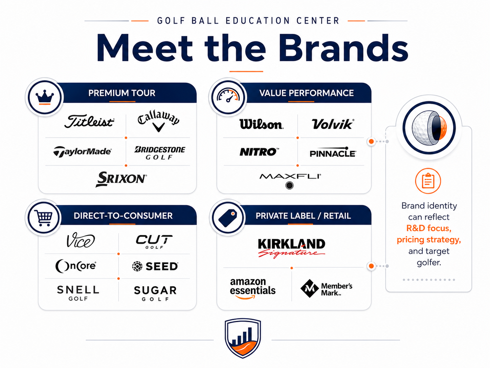

Golf Analytics Lab's Independent Guide to Golf Ball Manufacturers Every golf ball tells two stories: performance and the company behind it. This section objectively examines the companies, engineering philosophies, manufacturing approaches, innovation, consistency, and value behind today's golf balls.
